Managing Servers


Using Runtime Manager, you can register and set up the properties of servers, server groups, and clusters that reside on-premises. Once these are set up, you can select them as the deployment target for your applications, as an alternative to deploying to CloudHub.
Runtime Manager provides a single management interface where you can manage applications running in the cloud, on local servers, on server groups that are on-premises within your data center, or on clusters of servers. Applications that are on-premises run on Mule runtime instances on a single server or on a group of servers.
| Whether you’re using the cloud based or the Private Cloud Edition of the Anypoint Platform, these features work identically in both. If you’re interested in requesting the Anypoint Platform Private Cloud Edition, please contact your sales representative. |
Prerequisites
To perform on-premises server management, you need to have one of the following installed on your on-premises server:
-
Mule runtime, version 3.6 or above
-
API Gateway runtime, version 2.0 or above
For details on configuring an API Gateway runtime, see Configuring an API Gateway.
|
This document assumes that, if using the API Gateway, you are using version 2.0 or higher. The steps needed to complete server tasks differ between API Gateway 2.0 and previous versions. You also need to have the latest version of the Runtime Manager Agent to handle the communication between the Runtime and Runtime Manager. See installing and configuring Runtime Manager Agent. If you’re using Anypoint Platform Private Cloud Edition, then you must have the supported version of the agent. You can then install it following the instructions in Installing and Configuring the Runtime Manager Agent. |
| If you need to whitelist IPs or ports for connecting to the Anypoint Platform through a firewall, see Ports and IPs to Whitelist. |
Getting Started
Sign in to Anypoint Platform and click Runtime Manager:
Runtime Manager has two main tabs, Applications and Servers.
Applications Tab
In Runtime Manager, an application is a Mule Application that is running on a Mule runtime instance. The instance can be running on CloudHub, on an on-premise server of your organization, on a group of servers, or on a cluster. For server groups, an application deployed to the group runs separately on each of the servers, but it’s displayed as a single unit on this console.
| See [Status States] for possible values in the Status column. |
From the Applications tab, by selecting an entry as shown, you can perform these tasks:
-
Deploy an Application
-
Start, Stop, and Delete an Application
-
Manage an Application
For more on the options offered by this tab, see Managing Deployed Applications.
Servers Tab
In Runtime Manager, a server is a Mule runtime or API Gateway runtime instance in a location other than CloudHub. You must first register the in the Runtime Manager console. Once registered and configured in this tab, you may deploy your applications to it through the Applications Tab.
| Virtual servers created through Pivotal Cloud Foundry (PCF) aren’t displayed on this tab, just as CloudHub workers don’t. |
From the Servers tab, by selecting an entry as shown, you can perform these tasks:
-
Add a Server (registers the server with Runtime Manager console)
Switching Environments
If you have multiple environments in your organization, you can switch between them. From any screen in the CloudHub platform, you can switch to a different environment by clicking the current environment name, displayed in the upper left corner of the screen, and picking another environment.
-
Click the current environment in the top left corner of your Anypoint Platform UI
-
Select the environemnt you want to switch to
-
Click the switch button
Both servers and applications are always associated to a particular environment, and you won’t be able to see these until you switch to the right environment.
Servers Dashboard
If you select any of the servers, server groups or clusters on the Servers tab, a panel opens on the right. Here you will be able to read additional information about it and access some configuration items.
What this dashboard displays depends on whether it’s a server, server group, or cluster and on what runtime versions are in use. You will always see the status, the Mule version installed in it (server groups and clusters must all have the same Mule version installed to work together), the Agent version in use, in case of clusters and server groups you will also see the type (unicast or multicast).
A series of tabs in the bottom allow you to see details about:
-
The applications running and the status of each
-
Clusters and server groups display the list of servers and the status of each
-
Any plugins, such as Send data to External Analytics Software
On all panels, two buttons are displayed:
-
The View Dashboard button, which takes you to the server’s dashboard page. This page displays more detailed performance metrics and the evolution of these over time, see Monitoring Dashboards for more on this.
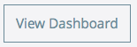Dashboards are a feature that isn’t currently available on the Anypoint Platform Private Cloud Edition -
The Manage Server / Manage Group / Manage Cluster button, which takes you to the Settings Page.
Settings Page
The settings page can be accessed by either:
-
Clicking the Manage Server / Manage Group / Manage Cluster button on the right panel that opens when selecting a server
-
Directly clicking on the name of the server / group / cluster on the table
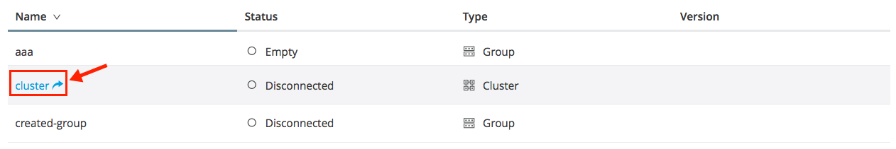
The settings page contains the same infomation that’s accesible on the right panel of the Servers section, with the addition of an Alerts History tab, that displays a record of the triggered alerts on this server. See Alerts on Runtime Manager for more on this.
Add a Server
The server communicates with Runtime Manager via an add-on to the Mule runtime called The Runtime Manager Agent. In order to make a server visible in the Runtime Manager console and be able to manage it, you must first register it with the Runtime Manager Agent.
|
If the server you want to add is already registered with a different instance of Runtime Manager, you won’t be able to add it until you remove if from the other instance. To do this, remove the server from the server list on the Runtime Manager console and then delete the 'mule-agent.yaml' configuration file found on your '{RUNTIME PARENT FOLDER}/conf' folder. If your environment requires all outbound calls to go through a proxy you will need to modify the proxy settings in the 'wrapper.conf' file in the '{RUNTIME PARENT FOLDER}/conf' folder. *If you’re using Anypoint Platform Private Cloud Edition, ensure you have a supported version Runtime Manager agent installed. |
Obtaining the Server Registration Token
To be able to run the command that registers your server with the Runtime Manager Agent, you must obtain the unique Token code for your particular instance of Runtime Manager and environment.
-
Go to the Servers tab in Runtime Manager.
-
Copy the full sample code that includes your unique token for your Runtime Manager account + environment. You will then run this code in a terminal in a further step.
-
If you have not added any servers to the environment yet, you will see the sample displayed right away in this tab.
image::empty-servers-add-server-1st-srv-corr-comm-real-2.png[empty_servers-add_server_1st_srv-CORR.COMM-REAL-2]
-
If the environment already contains servers, click Add Server. When you do this, you will see this same code that includes the token in it.
-
Run Command
-
Run the displayed command (listed below) on each Mule server or API Gateway server, it contains information that is unique to your organization. Running this command enables the Mule server to communicate with Runtime Manager. The key included in the
-Hparameter (partly redacted in the image above) is a token generated specifically for your Mule server or API Gateway to authenticate against Runtime Manager.
To run this command:
-
In Runtime Manager, click Copy to copy the displayed command to your clipboard.
-
Open a terminal in the server where your Mule server or API Gateway resides.
-
Go to the
bindirectory inside the Mule server or API Gateway root directory. -
Paste the command into your terminal.
-
Substitute the last parameter,
server-name, with the name you want for your server. In the example below, the name issrv1../amc_setup -H 17958da2-[redacted]---1942 srv1If running Windows, substitute amc_setup.batfor./amc_setup(without./). -
Press Enter to run the command.
-
Check that the command output on your terminal states that the credentials were extracted correctly
-
In the Servers screen of Runtime Manager, you should see that your server (named
srv1in this example) is listed as Created: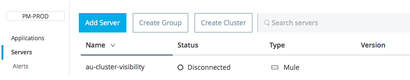
-
| If the server was running when registered, it needs to be restarted for it to start communicating with Runtime Manager. |
About the amc_setup Command
The amc_setup command described above resides in $MULE_HOME/bin. If you do not run it from this directory, you have to either set the MULE_HOME environment variable before running the command, or use the --mule-home parameter:
/opt/mule-3.7.0/bin/amc_setup --mule-home /opt/mule-3.7.0 -H ...The amc_setup script actually invokes the Runtime Manager Agent installation script, which has several useful parameters for configuring security and proxies. For details on the options, see Installation Options in installing and configuring Runtime Manager Agent.
About the Server Registration Token
The registration token provided by Runtime Manager (included in the command with the -H parameter) is specific to a single environment. For example, if you register a server in a QA environment by clicking Add Server, you get one token. However if you try to register into your Production environment by also clicking Add Server, you get a different token. Tokens are specific to the environment in which you register a server. You can only copy and paste a token to register multiple Mules if you want all servers to be in the same environment.
Shutting down, Restarting and Deleting a Server
In a hybrid deployment scenario, after creating a server, you can control its status from Runtime Manager.
-
From the Servers page, select the server you want to control.
-
In the information panel, click the server status label and choose the action you want to perform from the drop-down list. You can perform the following actions:
-
Shutdown
-
Restart
-
Delete
-
-
Confirm that you want to perform the selected action.
After shutting down the server, it cannot be restarted from Runtime Manager. You must manually restart the server on the machine where the Mule runtime is installed.
If an error occurs in Runtime Manager during server shutdown or restart, you must manually perform the action on the machine where the Mule runtime is installed. Ensure that you have access to this system
Setting Server-side Properties
After creating a server in a hybrid deployment scenario, Runtime manager enables you to define and configure server-side properties. These properties are defined as name/value pairs and are used by the JVM where the server is running.
To set a server-side property:
-
From the Servers page, select a server, then click Manage Server.
-
Click the Properties tab.
-
Provide a key and value, then click Apply Changes.
Viewing Server Properties
After adding a server, you can view informmation about the server from Runtim Manager:
-
Click Servers, then select the server whose properties you want to view.
-
Click Manage Servers.
Runtime manager displays the following information:
-
Status
-
Type
-
Gateway version
-
Agent version
-
Server IPs
-
Server OS
-
VM Vendor
-
License Expiration Date
Starting a Mule or API Gateway runtime
-
Start your Mule runtime or API Gateway runtime. To do so, open a terminal and change directory to the MuleSoft
bindirectory:-
For Mule runtime: Run
./mule -
For API Gateway runtime: Run
./gatewayor./gateway start. The first command retains the gateway process in the terminal foreground; when you want to stop the gateway, pressCTRL-C. If you are running API Gateway runtime in the foreground, your terminal fills with startup messages.
-
-
In the Servers screen of Runtime Manager, your server’s status changes first to Connected, then to Running:
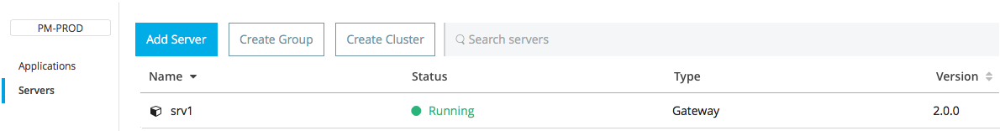
| See a full reference for server statuses in Status States. |
At this point, you have successfully added server srv1.
Restart an Application on a Server
You can restart an application that is currently running on a server from the drop-down menu in the status menu:
Stopping an Application on a Server
To stop an application that is currently running on a server:
-
Click a server entry to display the detail view on the right side of the screen.
-
Select Stop from the drop-down menu in the Status menu:
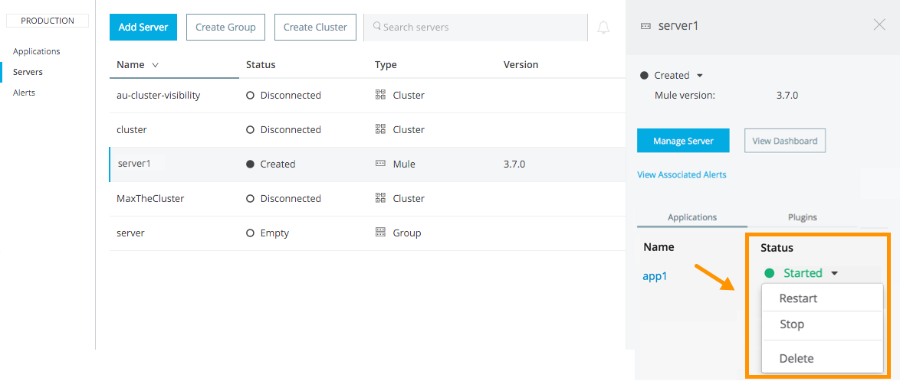
Creating a Server Group
A server group is a set of servers that act as a single deployment target, in which instances of the applications are completely isolated from each other.
To create a server group in Runtime Manager:
-
Download and install Mule runtime on two or more physical or virtual servers in your site.
-
Sign in to the Anypoint Platform and click Runtime Manager:
-
Click the Servers tab and use the token to register each server to the platform via its command line
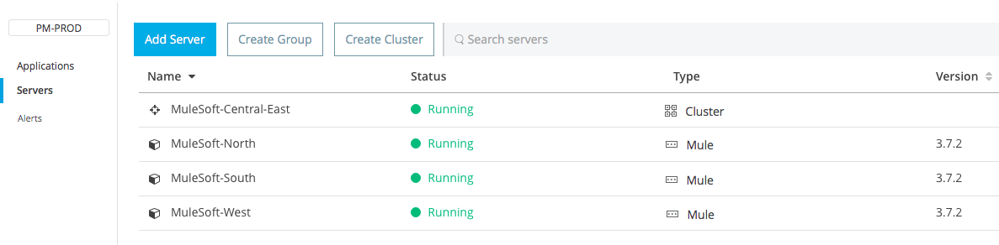 -
After all servers are registered and visible in the Servers tab, click Create Group:
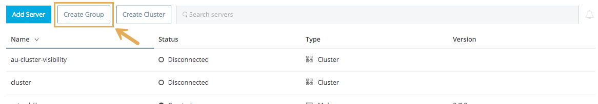This takes you to a settings page where you can select what servers to include in your new group and give it a name:
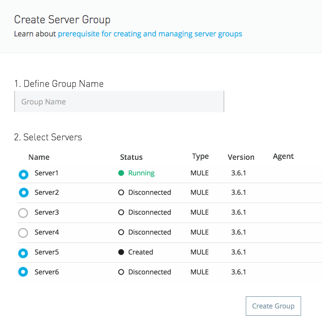 -
Give the server group a name
The group name must not start or end with a dash, must be at least 3 characters long, no more than 40 characters, must be unique, and contain only letters, numbers, or dashes. -
Click the checkbox for each server to include in the group, and click Create Group.
All servers in a server group must be running the same Mule runtime version and the same Agent version. Also, a server group can be created from servers that all display the status 'Running' or 'Disconnected' but these can’t be mixed with servers that display the status 'Created'. You can on the other hand create a server group out of only servers that display the status 'Created'.
Adding a Server to a Server Group
| If you want to add a server to a group that is currently running an existing application, you must first stop and and delete the application before you can add the server to a group. |
| Remember that you must first register each of the servers to Runtime Manager, by downloading and installing the same version of the Mule runtime and then running the amc_setup script on each. |
-
From the Servers screen, click a server to view the additional menu, and click Add Servers:
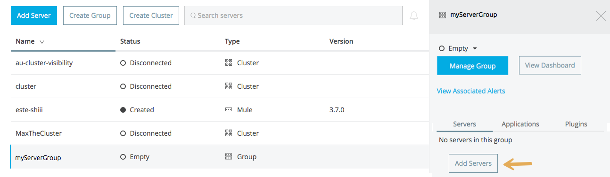 -
After you select servers to add to the group, click Add to Group:
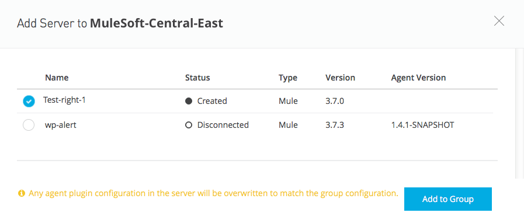
Removing a Server from a Server Group
To remove a server from a server group:
-
Expand the server group entry in the Servers tab and click the X icon at the far right of the entry:
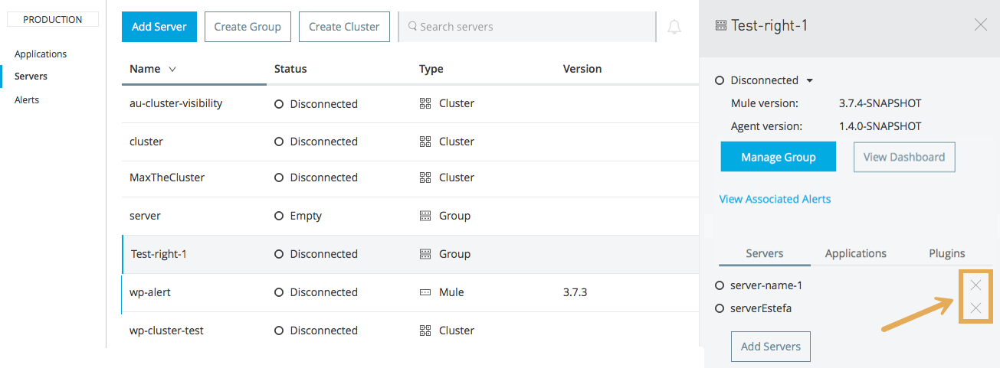 -
Anypoint Connection Manager displays a verification prompt. Click the check box and click Remove.
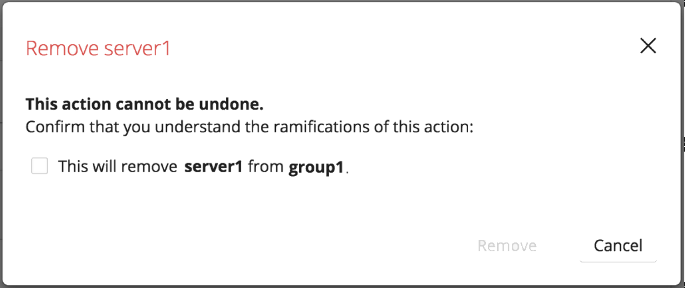
Deleting a Server Group
-
From the Runtime Manager Servers tab, click a server group entry to display the detail view on the right side of the screen.
-
Click the down arrow below the server name and select Delete group.
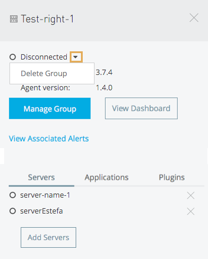 -
A prompt appears to be sure you want to continue. Click the check box and click Delete Server Group
When deleting a server group, consider the following: * Alert definitions and history for the server group are deleted. * Servers assigned to the server group are not deleted. Servers that belong to the deleted group are displayed in the main server list. They can be used individually or be paired up into other Server Groups or Clusters. * Servers assigned to the group are not restarted or shutdown. * Applications deployed to the servers in the server group are cloned on each server.
Create a Cluster
A Cluster is a set of servers that act as a single deployment target, in which instances of the application are aware of one another and share common information and synchronize statuses.
An on-premise cluster enables up to 8 servers to participate in a high availability processing unit so that in case one server should fail, another server takes over processing applications. A cluster can run multiple applications.
| Remember that you must first register each of the servers in the cluster, by downloading and installing the same version of the Mule runtime and then running the amc_setup script on each. A cluster can only be made up of servers that are not already in a server group or part of another cluster. |
| The minimum Mule version that supports this feature is Mule version 3.7.0 and newer. The minimum Runtime Manager Agent version that supports this feature is Agent version 1.1.1 and newer. |
To create a cluster in Runtime Manager:
-
Download and install Mule runtime on two or more physical or virtual servers in your site.
-
Sign in to the Anypoint Platform and click Runtime Manager
-
Click the Servers tab and obtain the necessary token register each server to the platform via its command line.
-
After all servers are registered and visible in the Servers tab, click Create Cluster. Servers can be added to a cluster in any status.
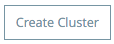 -
Give the cluster a name.
The cluster name must not start or end with a dash, must be at least 3 characters long, no more than 40 characters, must be unique, and contain only letters, numbers, or dashes. -
Choose Multicast or Unicast. For more information, see Multicast Versus Unicast.
-
Click the checkboxes for the names of the servers to add to your cluster, and click Create Cluster.
-
None of the servers you select for creating a new cluster can contain any previously deployed applications.
-
Multicast servers can be in the Status States 'Running' or 'Disconnected', whereas unicast servers can only be in the state 'Running'. They can’t be merely in 'Created' state.
-
All servers in a cluster must be running the same Mule runtime version and Agent version.
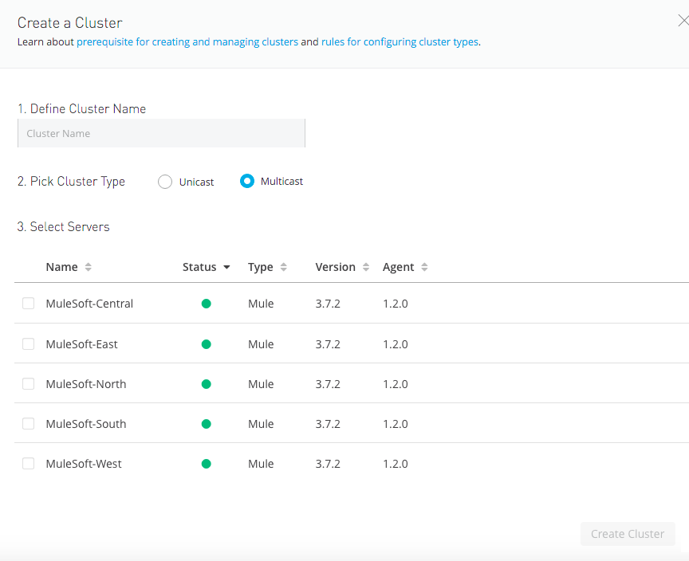 -
-
Click the cluster name to list details about the cluster. This view also lets you add additional servers, remove servers, and delete the cluster:
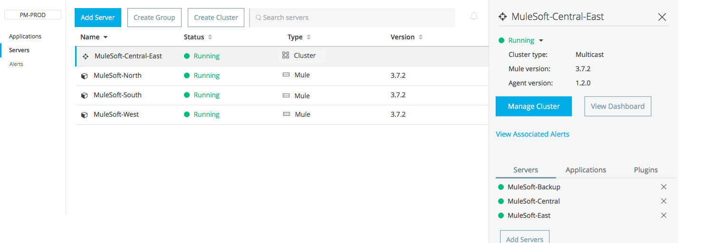
| If you wish to have Object Store persistence amongst all servers of your cluster, you must create your cluster manually and use the quorum feature. |
Add a Server to a Cluster
| Remember that you must first register each of the servers in the cluster, by downloading and installing the same version of the Mule runtime and then running the amc_setup script on each. A cluster can only be made up of servers that are not already in a server group or part of another cluster. |
To add an additional server to an existing cluster:
-
In the Runtime Manager Servers tab, click the name of a cluster to open the details view.
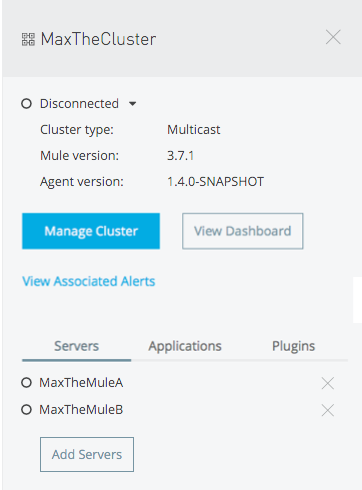 -
Click Add Servers.
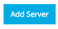 -
Click the checkbox for each server to add to the cluster, and click Add Servers
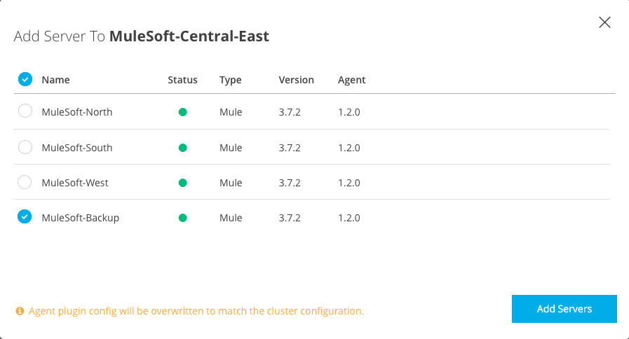
| All servers in a cluster must run the same version of Mule runtime and of the Runtime Manager Agent. |
Delete a Server From a cluster
To delete a server from a cluster:
-
From the Runtime Manager’s Servers tab, click the name of a cluster.
-
Click the X to the right of the server’s name:
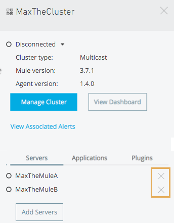A prompt appears to be sure you really want to remove the server from the cluster.
-
Click the checkbox to verify your choice, and click Remove to complete the action:
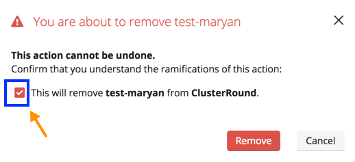
Delete a Cluster
When deleting a cluster, consider the following: * Alert definitions and history for the cluster are deleted. * Servers assigned to the cluster are not deleted. * Servers assigned to the cluster are restarted. * Applications deployed to the servers in the cluster are removed.
To delete a cluster from Runtime Manager:
-
From the Runtime Manager Servers tab, click the name of a cluster to show details.
-
Click the down arrow next to the cluster status and click Delete Cluster:
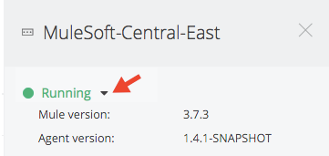 -
A prompt appears to be sure you want to continue. Click the check box and click Delete Cluster:
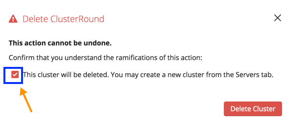
Clusters vs Server Groups
Both clusters and server groups run applications in multiple distributed nodes, the difference lies in that in a server group, instances of the applications are completely isolated from each other, whilst on a cluster its nodes are aware one another and share common information and synchronize statuses.
For a detailed explanation of the benefits of clusters, see Mule High Availability Clusters.
Multicast Versus Unicast
A cluster can be created in the Runtime Manager from servers that are already registered with the Runtime Manager console. While configuring a cluster, you can specify either unicast or multicast options for identifying a node within the cluster:
-
Unicast. A unicast cluster requires that you configure the IP addresses of which nodes to associate together. No special network configuration is necessary other than to indicate which are the server IP addresses that make up the cluster. Each server needs to be in Running status when it is added to a unicast cluster. If a server has multiple interfaces, use the internal IP, the one that allows a node to have a direct communication with other nodes. Clustering across different subnets is not supported.
Mule relies on the IP address as the unique handle for identifying a server, which means it is impossible to have IP addresses dynamically assigned using DHCP for servers on a unicast cluster. If a server is restarted and uses DHCP to get a new IP address, it needs to be rejoined with the cluster using its new IP address. -
Multicast. A multicast cluster groups servers that automatically detect each other. Servers that are part of a multicast cluster should be on the same network segment.
One advantage of using multicast is that a server does not need to be running to be configured as a node in a cluster. Another is that you can add nodes to the cluster dynamically without restarting the cluster.
Check with your network administrator if multicast is allowed within your network, as many networks block multicast functionalities.
Alerts
You can set up email alerts that are sent whenever certain events occur to your servers, such as a server being disconnected, or a server being removed from a cluster. These alerts may be linked to a specific server or to all of them. See Alerts for instructions on how to do this.
See Also
-
Learn how to first Deploy Applications to your Own Servers
-
Managing Deployed Applications contains more information on how to manage your application once deployed
-
Managing Applications on Your Own Servers contains more information specific to on-premise deployments
-
See how you can Monitor your Applications
-
A REST APIs is also available for deployment to your servers.